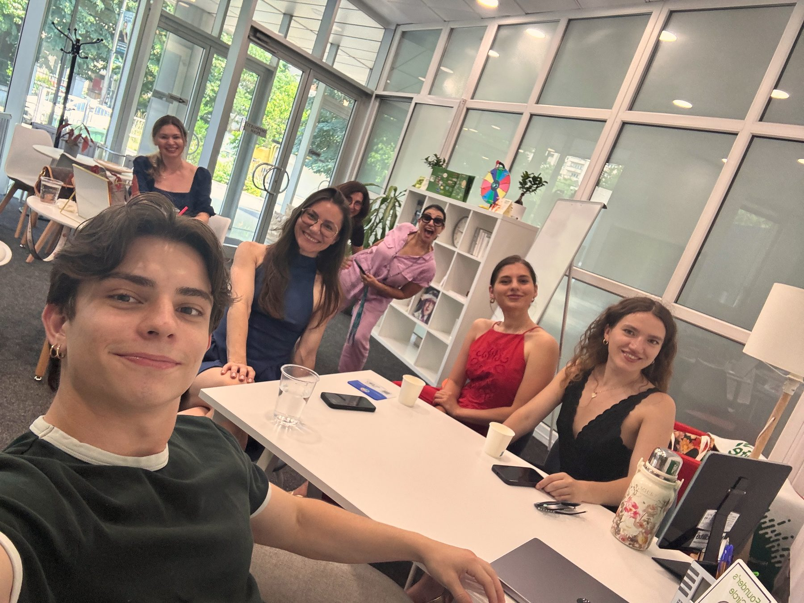

Ce spun oamenii după vizită.
Recenzii publice de pe profilul Google Boost Club, redate în limba și textul originale.

Great atmosphere, great people, and an amazing place to spend your mornings.
Rând cu rând.
Fragmente scurte, cuvânt cu cuvânt, din recenziile de mai jos.
Gabriel explains everything clearly and takes the time to make sure you understand the process.
TheoThanks to their analysis I understand my body better and where i need to keep working.
Buduianu FilofteiaAm avut o discuție foarte plăcută cu Gabriel, mi - a explicat foarte clar planul de nutriție.
Andreea MarinescuI’ve been coming for a few weeks and my energy levels have improved a lot.
shahaf waitzmanGreat Community, Gabriel is an amazing listener, very educated about his craft and very positive energy.
Sami ChemaisThe body composition assessment was free and everything was explained to me in a friendly, clear and professional way.
Diana
I highly recommend at least having a chat with them, they might help you more than you think.
Marius Gasparelo scanare foarte detaliata a corpului,totul este premium si personalul este liber sa te ajute cu orice intrebare
Flavius ROI learned a lot about nutrition in a way that was easy to understand and apply in everyday life.
Andreea PopaThe atmosphere is so welcoming, positive, and motivating from the moment you walk in.
AntonioHad a great conversation with Gabriel about nutrition and good habits.
Ionuț-Alexandru StanWhat stands out most is the community and support.
Jaja
Ce spun clienții noștri.
Boost Club has been amazing. It helped me gain muscle and stay consistent with my nutrition. Gabriel explains everything clearly and takes the time to make sure you understand the process. Great atmosphere, great people, and an amazing place to spend your mornings. Highly recommend!
I had a great experience with them! The body composition assessment was free and everything was explained to me in a friendly, clear and professional way. I received helpful insights into my body composition and advice on how to improve my overall health and energy levels. I really appreciated the time taken to explain the results and answer my questions. Thank you, Gabriel!
Absolutely love Boost Club! The atmosphere is so welcoming, positive, and motivating from the moment you walk in. The staff are incredibly friendly, knowledgeable, and genuinely care about helping you reach your personal wellness goals. Everything is explained clearly, the recommendations feel personalized, and the products taste amazing. The club is also beautifully maintained, clean, and has such good energy. I always leave feeling happier, healthier, and more motivated. I couldn’t recommend Boost Club enough—definitely a well-deserved 5 stars!
Am avut o discuție foarte plăcută cu Gabriel, mi - a explicat foarte clar planul de nutriție. Am fost foarte mulțumită de această experiență!
Great guys, very professional and knowledgeable in fitness and nutrition, good positive vibes, genuinely interested in helping people. I highly recommend at least having a chat with them, they might help you more than you think. Overall great experience, a team I would recommend to anyone wanting to reach their fitness goals.
Great Community, Gabriel is an amazing listener, very educated about his craft and very positive energy. Very excited to work with them and I 100% recommend
Really enjoying being part of the Boost Club community so far.
The atmosphere is great, the people are welcoming, and it’s become one of my favorite places to spend time. The shakes are delicious, the energy is positive, and being surrounded by people working on themselves is incredibly motivating.
What stands out most is the community and support. I’ve already seen positive changes, and from everything that’s being built, it feels like there’s so much more to come.
Excited to see where Boost Club goes next!
I’ve been coming for a few weeks and my energy levels have improved a lot. Gabriel and the team is friendly, knowledgeable, and genuinely cares about helping people reach their goals.
o scanare foarte detaliata a corpului,totul este premium si personalul este liber sa te ajute cu orice intrebare
Had a great experience at Boost Club! Gabriel was incredibly welcoming, kind, and supportive from the very beginning. I learned a lot about nutrition in a way that was easy to understand and apply in everyday life. Thank you for the positive energy and valuable guidan. I truly enjoyed it and would definitely recommend it!
The boost club was really an amazing experience. Thanks to their analysis I understand my body better and where i need to keep working. Great team! Really recommend!
I had a great experience, getting to know things about my body’s composition and how to maximise muscle mass gain. Had a great conversation with Gabriel about nutrition and good habits.
Super nice place with great energy👍👍Shakes and consultations are great and help you see the results in no time.
Gabriel very experienced nutritionist with extensive knowledge on the domain, friendly and helpful. Nice place
Spent the day with Gabriel at Boost Club!!! WOW The energy in this place is amazing,great vibes great shake what else could you ask for?. The owner is such a character! If i had one takeaway it’d definitely be about how welcome i feel here, no shame at all just people working on being better versions of themselves..Right On i say!
This tiny club in the heart of Bucharest is a hidden gem for people who are looking for Community,Health and wellbeing! i certainly can say i learned alot and this is just the start??!! I cannot wait to see this club grow seeing its potential already.
Great guy!super pozitive and energetic! Go visit him you will not regret!
The stuff are very friendly, the place is pretty professional and they have great offers
It's super great
I love that it's not watery like normal protein shake. It is filling aswell and really considerable for breakfast and more. I like that it is also lactose intolerant and Gabriel did a good job explaining everything. 👌🏾
Had a great experience with Boostclub! Gabriel was very energetic, fun, and easy to talk to. He gave me a lot of useful information and made the conversation really enjoyable. I’m very excited and curious about the producs.
Dear readers, gentleman Gabriel, was exquisite in explaining and taking his effort and time in his knowledge of Herbalife and I am happy to take this information with me.
Jade Sirtaine
Gabriel done a very nice job a really inspired with him i suggest to people come here and join with gabriel
Great experience so far in terms of healthier living
Good experience with Gabriel, he is a good health advisor and take care of your health
I had an initial consultation with Gabriel! Really insightful and inspiring.
Had a great time! Gabriel was very helpful, ecxited to see my results!
Grate experiance and awsome advice!
Great experience and Gabriel is the best
Boost Club has a great atmosphere in the mornings. Friendly people, good energy, and helpful nutrition coaching. Highly recommend checking it out.
Very friendly guys, i really recommend this
Best in the business when it comes to nutrition and health
Recommend for a try to follow a healthy life
A place that can really change the way you see yourself
Very nice service, Gabriel is very supportive!
Great advice and help, very useful and fun
Awesome consultation, friendly and helpful.
It was a really cool and helpful consultation
Great atmosphere, great consultant, great time.
Cozy place with amazing energy !
Really good experience
Perfect thank u verry much
Exceptionally, love the vibe of Gabriel.
Great place and energy
Nice experience
Great experience 💚
Great session!
Had a pleasant experience chatting with Gabriel during my consultation today. The information he provided is something everyone should know about themselves.
Would recommend.
Gabriel is knowledgeable, supportive, and professional. They took the time to understand my goals and offered practical nutrition advice that felt realistic and personalized. I appreciated their thoughtful guidance and encouraging approach, and I’d gladly recommend them to anyone looking for help building healthier habits.”
Really interesting experience and you have what to learn.
Amazing
Top
It's a really fancy place I recommend it
Professional workspace, kind and friendly employees and an overall great experience
Today, I had a body composition scan done with Gabriel.
Gabriel is a very professional guy who knows his stuff and knows how to help you achieve your best physique through proper nutrition.
Great Coach! We did a quick bodyscan and he told me exaclty what to improve on. I know it is not popular to go for things like this in Romania, however, I'd say you should pay him a visit (it's free) get your recommendations, and see what's to be done from there.
Gabi was such a great company, truly passionate and proffesional! I recomend it from the bottom of my heart!
It was great !! Really inclusive of age, goals of a certain person, really transparent. I think those is a major opportunity for everyone that just wants more out of life.
really cool experience
Great overall experience! Gabi is calm and very nice to talk to!
Amazing location, This place is great for focusing on my goals and I really love it!
Lovely place, very pleasant staff
Great experience. Great products. 🙌
Very pleasant environment, friendly people and overall great experience!
nice place!!! and a very nice vibe🥰
Nice location and polite staff. Love it
It was an amazing first experience. I am looking forward to working with Gabriel as I know that he will do a great job.
Really professional, good vibes and helpful too!
great shakes
I got some really great advice, I love it!
awesome place and energy, recommend it to everyone👍🏼
Excellent people. I really recommend
Great talk!
Great experience at the Boost Club! Gabriel is very nice, very dedicated and has a lots of great information! I can definitely recommend him as your nutrition coach!
Good place
gabineshto is wow
Having the best time at boost club, the coaches Semyon and Gabriel are here to help with everything that has to do with health nutrition fitness and everything else, this is the number 1# place to be to reach your goals
I enjoyed the consultation with Semyon. He is knowledgeable and can offer good insights to improve your health and general fitness.
It was an amazing experience with Gabriel and he gave us so much useful information and advice to improve on our wellness.
Gabriel is very friendly and experienced in his work. Knows what he is about in the wellness industry
Beautiful experience and great service with Gabriel
It was a nice experience, well explained and informative
Great experience and Gabriel is really nice!
I loved the vibe, welcomed by great people with experience. Good work!
Great consultation :)
Really nice people💜
Was a really great experience and Gabriel is pretty knowledgeable and master in his craft , would really recommend working with him to achieve your goals.
Nice place
Ваууу….сьогодні була вперше у “Boost Club” атмосфера дуже позитивна. Сам Клуб дуже красивий. Усім рекомендую обов’язково записатися на консультацію.
Zilele trecute am primit o nouă comandă, perfectă pentru vacanța noastră la mare, iar astăzi am vizitat noul centru de wellness. Mi-a plăcut foarte mult atmosfera primitoare și energia pozitivă. Aici găsești shake-uri proteice Herbalife delicioase, recomandări pentru un stil de viață sănătos, activități sportive și workshop-uri interesante. Este un loc unde te simți bine și găsești motivație să ai mai multă grijă de sănătatea ta. Recomand cu drag!
mi a plăcut foarte mult comunitatea și am aflat lucruri interesante despre corpul meu
Atmosferă bună, oameni pozitivi și un loc în care te simți bine venit. Recomand cu drag!
Experiența a fost f faina , mi-a plăcut conversația pe care am avut-o.
Comunitate misto,incearca sa creeze ceva frumos . Succes in a reusi asta !
Un club se nutritie excelent!
Как здорово, что в Бухаресте открылся такой чудесный Клуб! Габи просто потрясающий молодой человек, который уже много знает и много умеет! Чудесная локация, в Клубе много света, души, чувствуется энергия, молодость и сила! Коктейли шедевральные, а общение на высоком уровне. Здесь можно общаться на русском и английском! Все рекомендую однажды прийти и не уходить❤️
O comunitate frumoasă! 🎉
Recomand✅
foarte eficient
Foarte de treabă personalul
Atmosfera este foarte plăcută și primitoare. Personalul este amabil, bine pregătit și m-a ajutat să aleg exact produsele potrivite. O experiență excelentă.
baiatul de aici este foarte amabil si atent la orice detaliu. recomand cu siguranta.
Gabriel a fost foarte de ajutor, mi-a explicat foarte multe despre creșterea in masa musculara💪
O experiență foarte bună, un băiat de nota 10 care te ajută cu toate întrebările.
Boost Club este un loc minunat pentru mine.

Împărtășește experiența ta.
Dacă ai fost la o consultație la Boost Club, recenzia ta sinceră pe Google ajută alți oameni să ia o decizie informată. Nu solicităm recenzii pozitive. Solicităm recenzii autentice.
Vii pentru scanare. Rămâi pentru oameni.
Prima vizită e gratuită. Vino, măsoară-te, înțelege de unde pornești.